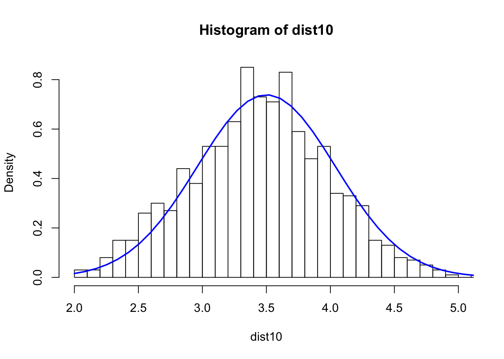
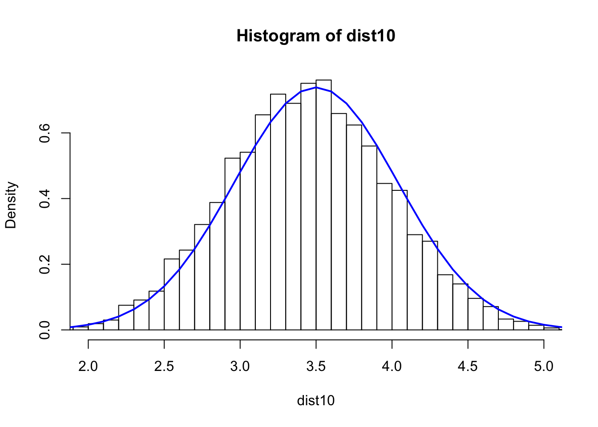

Central Limit Theorem
Derivation
\(D\) is a random variable and \(S = \frac{D_1 + D_2 + ...D_n}{n}\). Then \(\sqrt{n}(S_n-\mu) \overset{p}{\to} N(0,\sigma^2)\) or \((S_n-\mu) \overset{p}{\to} N(0,\frac{\sigma^2}{n})\)
If we take the average of rolling the dice 10 times, then the variance of \(S_{10}\) is \(Var(S_{10}) = Var(\frac{D_1 + D_2 + ...D_{10}}{10}) = \frac{1}{10^2}Var(D_1+...D_{10}) = \frac{1}{10}Var(D)\)
## roll the dice s=10 times and take the average. repeat the process for N=200 times and see what the dist. looks like
dist10 <- numeric(0)
N=100
for(i in 1:N) {
s10 <- sample(1:6,10,rep=T)
dist10 <- c(dist10,mean(s10))
}
hist(dist10,breaks=40,xlim=c(2,5),probability = TRUE)
xfit <- seq(min(dist10), max(dist10), length=40)
yfit_density <- dnorm(xfit, mean=3.5,sd=0.5400618)
lines(xfit, yfit_density, col="blue", lwd=2)
sd(dist10)^2 ## Var## [1] 0.337304## roll the dice s=10 times and take the average. repeat the process for N=200 times and see what the dist. looks like
dist10 <- numeric(0)
N=1000
for(i in 1:N) {
s10 <- sample(1:6,10,rep=T)
dist10 <- c(dist10,mean(s10))
}
hist(dist10,breaks=40,xlim=c(2,5), freq = FALSE)
xfit <- seq(min(dist10), max(dist10), length=40)
yfit_density <- dnorm(xfit, mean=3.5,sd=0.5400618)
lines(xfit, yfit_density, col="blue", lwd=2)
sd(dist10)^2 ## Var## [1] 0.2964805## roll the dice s=10 times and take the average. repeat the process for N=200 times and see what the dist. looks like
dist10 <- numeric(0)
N=10000
for(i in 1:N) {
s10 <- sample(1:6,10,rep=T)
dist10 <- c(dist10,mean(s10))
}
hist(dist10,breaks=40,xlim=c(2,5),freq = FALSE)
xfit <- seq(min(dist10), max(dist10), length=40)
yfit_density <- dnorm(xfit, mean=3.5,sd=0.5400618)
lines(xfit, yfit_density, col="blue", lwd=2)
sd(dist10)^2 ## Var## [1] 0.2860529## roll the dice s=10 times and take the average. repeat the process for N=200 times and see what the dist. looks like
dist50 <- numeric(0)
N=10000
for(i in 1:N) {
s50 <- sample(1:6,50,rep=T)
dist50 <- c(dist50,mean(s50))
}
hist(dist50,breaks=40,xlim=c(2,5), freq = FALSE)
xfit <- seq(min(dist50), max(dist50), length=40)
yfit_density <- dnorm(xfit, mean=3.5,sd=0.2415229)
lines(xfit, yfit_density, col="blue", lwd=2)
sd(dist50)^2 ## Var## [1] 0.05905172## roll the dice s=10 times and take the average. repeat the process for N=200 times and see what the dist. looks like
dist100 <- numeric(0)
N=10000
for(i in 1:N) {
s100 <- sample(1:6,100,rep=T)
dist100 <- c(dist100,mean(s100))
}
hist(dist100,breaks=40,xlim=c(2,5),freq = FALSE)
xfit <- seq(min(dist100), max(dist100), length=40)
yfit_density <- dnorm(xfit, mean=3.5,sd=0.1707825)
lines(xfit, yfit_density, col="blue", lwd=2)
sd(dist100)^2 ## Var## [1] 0.02944032Summary
The higher the number that is used for average, the lower the variance of the distribution. The higher the number for simulation, the closer to the normal distribution.